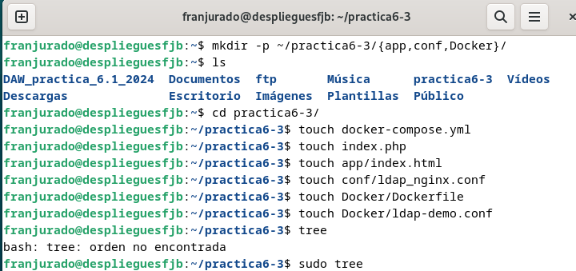
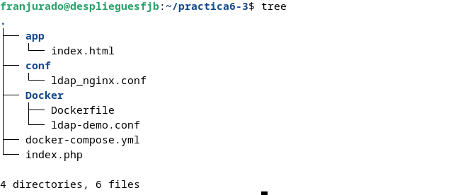
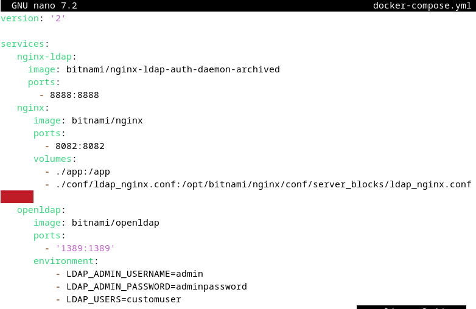
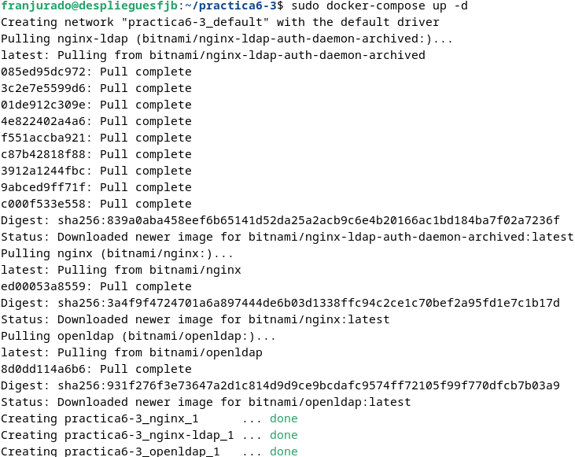
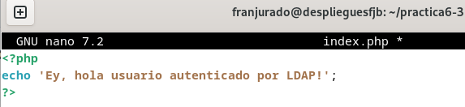
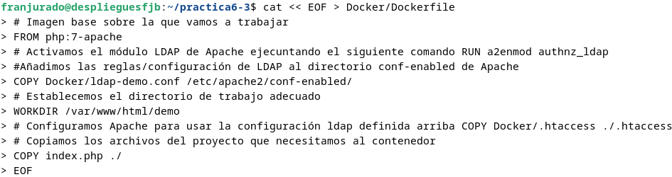
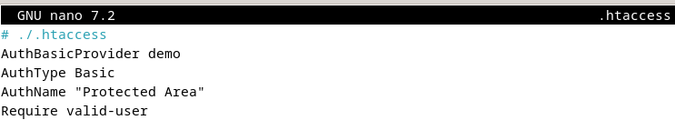
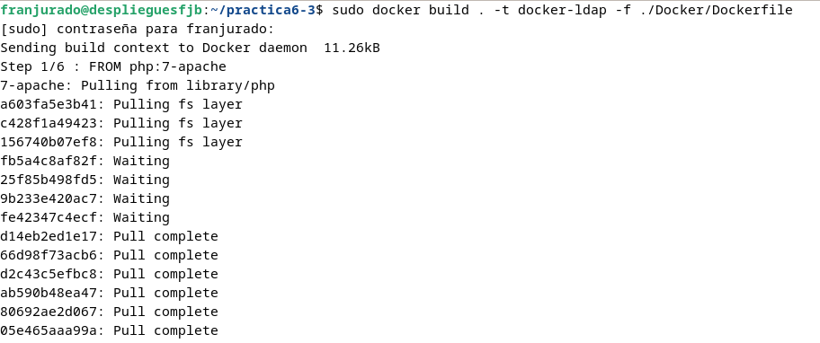
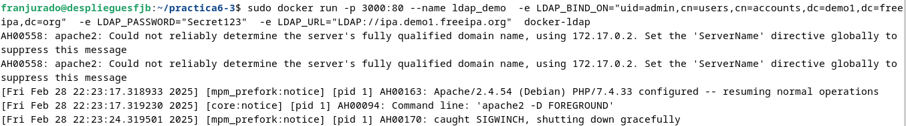
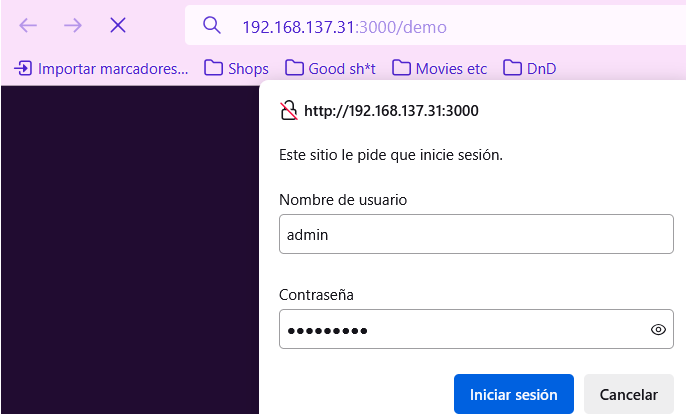

Práctica 6.3 - Despliegue de servidores web con usuarios autenticados mediante LDAP usando Docker y docker-compose
Despliegue con Docker de NGINX + demonio de autenticación LDAP + OpenLDAP
Empezamos creando los archivos necesarios para la práctica.
Es importante comprobar el arbol de documentos, en mi caso he tenido que instalar tree.


Dentro del directorio app se deberá crear un archivo index.html con el siguiente contenido. Lo hacemos sin usar el comando nano


Tras hacer esto creamos el archivo ldap_nginx.conf y su configuración:
$ cat << EOF > conf/ldap_nginx.conf
server {
listen 8082;
location = / {
auth_request /auth-proxy;
}
location = /auth-proxy {
internal;
proxy_pass http://nginx-ldap:8888;
# URL y puerto para conectarse al servidor LDAP
proxy_set_header X-Ldap-URL "ldap://openldap:1389";
# Base DN
proxy_set_header X-Ldap-BaseDN "dc=example,dc=org";
# Bind DN
proxy_set_header X-Ldap-BindDN "cn=admin,dc=example,dc=org";
# Bind password
proxy_set_header X-Ldap-BindPass "adminpassword";
}
}
EOF

En la configuración anterior se ha establecido que Nginx escuche en el puerto 8082 para no tener problemas de que esté ocupado. Además, se ha configurado una autenticación para el directorio /auth-proxy, especificando la URL del servidor OpenLDAP (usando el nombre del contenedor Docker), el DN base para las búsquedas y las credenciales de acceso para realizar las consultas.
Hecho esto, se creará un archivo docker-compose.yml con el siguiente contenido:

Con el archivo docker-compose.yml creado, se levantarán los contenedores y se comprobará que funcionan correctamente.

Si accedemos a la dirección http://tu-ip:8082 deberá aparecer la siguiente pantalla:

Introducimos las credenciales que usamos anteriormente. Usuario customuser y contraseña custompassword en este caso.

Despliegue con Docker de PHP + Apache con autenticación LDAP
Ahora modificaremos el archivo index.php con el siguiente contenido:
<?php
echo 'Ey, hola usuario autenticado por LDAP!';
?>

Luego, modificamos el archivo Dockerfile del directorio Docker, donde los espacios se cambiarán por los comandos pertinentes:
./Docker/Dockerfile --> directorio donde se encuentra este archivo
Imagen base sobre la que vamos a trabajar
____ php:7-apache
Activamos el módulo LDAP de Apache ejecutand el siguiente comando
____ a2enmod authnz_ldap
Añadimos las reglas/configuración de LDAP al directorio conf-enabled de Apache
(crearemos este archivo en el siguiente paso)
____ Docker/ldap-demo.conf /etc/apache2/conf-enabled/
Añadimos ayuda de depuración (debugging) en la configuración de apache
En caso de necesitarlo, lo descomentamos para ejecutar el siguiente comando
____ echo "LogLevel debug" >> apache2.conf
Establecemos el directorio de trabajo adecuado
____ /var/www/html/demo
Configuramos Apache para usar la configuración ldap definida arriba, la copiamos de nuestro ordenador al contenedor
____ Docker/.htaccess ./.htaccess
Copiamos los archivos del proyecto que necesitamos, al contenedor
____ index.php ./
También modificamos el archivo ldap-demo.conf en Docker:
./Docker/ldap-demo.conf
PassEnv LDAP_BIND_ON
PassEnv LDAP_PASSWORD
PassEnv LDAP_URL
<AuthnProviderAlias ldap demo>
AuthLDAPBindDN ${LDAP_BIND_ON}
AuthLDAPBindPassword ${LDAP_PASSWORD}
AuthLDAPURL ${LDAP_URL}
</AuthnProviderAlias>


Y el archivo htaccess se modificará con lo siguiente:
cat << EOF > Docker/.htaccess
AuthBasicProvider demo
AuthType Basic
AuthName "Protected Area"
Require valid-user
EOF


Si todo ha salido bien hasta ahora, se podrá ejecutar el siguiente comando para construir una imagen:
sudo docker build . -t docker-ldap -f ./Docker/Dockerfile

Y si también ha salido bien, ejecutaremos un comando para levantar el contenedor pertinente:
sudo docker run -p 3000:80 --name ldap_demo \ -e LDAP_BIND_ON="uid=admin,cn=users,cn=accounts,dc=demo1,dc=freeipa,dc=org" \ -e LDAP_PASSWORD="Secret123" \ -e LDAP_URL="LDAP://ipa.demo1.freeipa.org" \ docker-ldap

Por último comprobamos que si entramos en la dirección http://nuestra-ip:8082/demo, debería preguntarnos para iniciar sesión, entrando esta vez con usuario admin y contraseña Secret123.


Y con ello, se acaba la práctica.